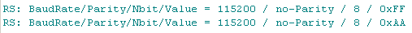

may 2007
JALsPy Functional Simulation
Introduction
First of all, for the moment this is just a weird experiment, with a unknown future.
For larger PIC programs it would be desirable to have test methods at several levels of the design, a functional simulator at the top level, an assembler simulator at the intermediate level and the real hardware as final test object. At the intermediate level there are several simulators (e.g. uDev, JALss, PICsim), which all have there strong and there weak points, neither of them being perfect. The major problems with an assembler simulator are, it's unknown which and how many bugs they contain and because these are quiet complex programs, with lot's of changes for each new PIC, it's very difficult to maintain them (and to find people how can and will contribute to such a developement).
A functional level simulator is relative easy to realize and after the initial design is done it can easily be maintained (just small changes for new PICs). And this is major advantage, because now it must be easy for everyone to join the maintainance. The design of a functional simulator can be started at a very high abstraction level, and future adding of details is quit easy and can be done at the moment they are desired.
Preliminary Goal and Conditions
Preliminary Choices
First experiment: Blinking LED
For the first experiment we took the famous "Blinking Led" example. Below on the left is the original JAL code, on the right is the translated Python code. This first example was translated manual, but the resemblance is very good, so it shouldn't be too difficult to create an automatic translation.
|
JAL code |
Python translation |
Register Watch
And yes, this is the real output (shown in PyScripter, a Python IDE) of a run in Python of the above code, running in real-time ! The table shows the port changes of all the ports and time in milli-seconds expired since the previous line dump. And as you can see bit 3 of the A-port is really toggling.
Abstraction Level
This paragraph shows how the JAL simulation can start with a very tiny and simple piece of code (highest abstraction level), and can very easily be extended in the future with capabilities to find bugs, difficult to find with low-level simulators and even it is able to find JAL compiler bugs.
To see what I mean by abstraction level, let's look at an typical example. For the example we take the RS232 serial write procedure, because it's used in almost every program, if not as functional code then at least as debugging tool. At the highest abstraction level, we just want to see the value send over the serial port, and thus the code we've to implement in Python is very simple:
and if the function is used in the JAL program, like this,
we get a beautiful output, whichever Python IDE you might use:
Now a first extension could be the addition of a trace buffer, so at any moment in the program we could see the last 1000 or so bytes transmitted over the RS232 line. Now the Python code becomes:
Note: In Python the above code might better be written as an object, but this deliberately not done, to make the Python code understandable by people not familiar with Object Oriented Programming.
If we want to get more detailed information, the next step could be to also display the actual RS232 settings. With just a small extension we get a lot more information:
resulting in the following output

Now we're sunk so deep, we need to add things that will really give us additional simulation / debug information. What can go wrong. Well first of all the Serial_HW_Write procedure is at least 5 years old, has survived JAL v0.4 up to JAL v2.1, so we can fairly say that this procedure is 100% bug free. There's only a few things that can go wrong, some other parts of the JAL code (or the JAL-compiler) can change the settings of the serial RS232 port. Another failure may be caused by code that places byte in the serial transmit buffer. So by a little extension we can catch these errors:
And of course we can still go to a lower abstraction level, by implementing the complete assembler simulation. I don't think this would be very wise, because Python is a scripting language, it will be too slow for these kind of tasks.